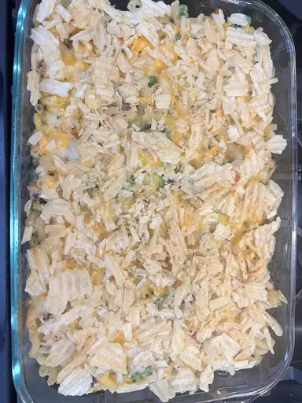

Tuna Casserole

Description
This easy tuna pasta casserole is made with macaroni, creamy soup, cheese, tuna, and fried onions.
Ingredients
- 3 cups cooked macaroni
- 1 (5 ounce) can tuna, drained
- 1 (10.5 ounce) can condensed cream of chicken soup
- 1 cup shredded Cheddar cheese
- 1 ½ cups French fried onions
Steps
- Preheat the oven to 350 degrees F (175 degrees C).
- Combine cooked macaroni, tuna, and condensed soup together in a 9x13-inch baking dish; sprinkle with cheese.
- Bake in the preheated oven until bubbly, about 25 minutes. Sprinkle with fried onions; bake 5 minutes more.